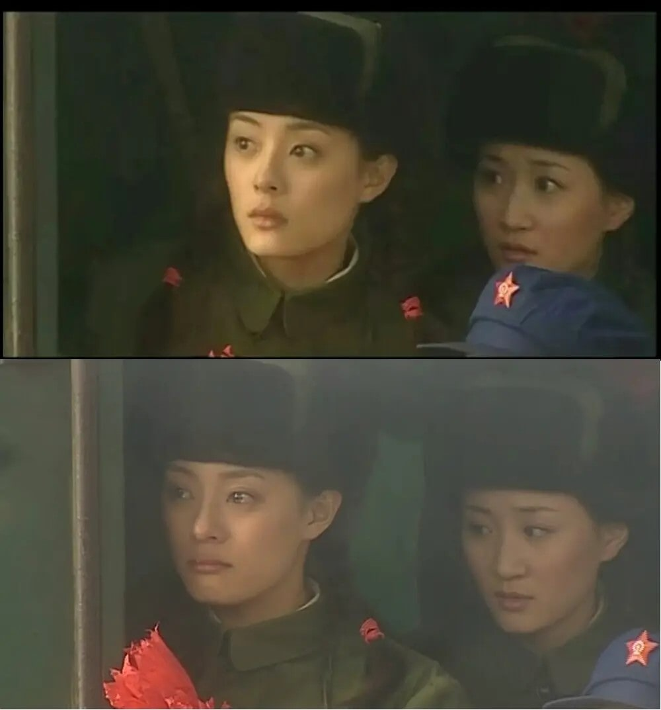
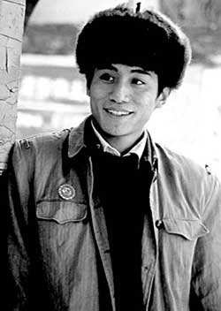

最近写论文和毕设手册的同时，在B站看完了血色浪漫，很早以前就想看这部剧了，一方面是因为喜欢刘烨和刀郎，另一方面是最近在微博上刷到了不少北京、顽主这类题材的东西，与青春有关的日子里佟大为、羽凡他们拿过路人开涮的视频片断，还有王朔的时间轴传记。
印象中，小时候电视里很多频道都演过血色浪漫，因为每次看都是断断续续的，只看过几集，我一直以为这是一部刘烨和孙俪的感情戏，类似于后来出现的甜蜜蜜？这次有机会从头到尾看完，才发现这是一群人乃至一代人的故事。
我是开着弹幕看的，因为即使开了弹幕也不会挡到画面，没想到在B站看这么老的剧也有很多弹幕，很多弹幕对这部剧演员们的演技给了很高的评价。大部分弹幕都很有意思，傻吊网友们说话都很好玩，开着弹幕看还有一个好处，就是可以注意到很多自己忽略掉的细节，但是很容易被剧透，比如某人物刚一出场，就有弹幕说他死的时候可真感动如何如何，让人猝不及防，真的很蛋疼。另外，B站的版本是没有片头片尾的，中间好像有一集忘记剪掉片尾了，所以终于听到了熟悉的刀郎的声音。《新阿瓦尔古丽》的曲子，词好像不一样，这首歌能让人回到03、04年。
不知道是台词还是演技的关系，还是那个时代的人说话就是那样的，有时候会让人觉得尬尬的。不过刘烨和孙俪真的好看啊，尤其是孙俪，戴上眼镜后简直美哭了。

这部剧让人印象深刻的配角角色很多，小混蛋、李奎勇、吴满囤，这些普通人的命运让人唏嘘，他们和高官的子女，所谓的大院子弟在那个混乱的年代形成的对比十分强烈。不论是哪个年代，哪种社会都存在阶级。想想如今的社会又何尝不是如此。弹幕里一直在刷郑桐舅舅，郑桐的演员叫马元，他妈妈名字叫习乾平，舅舅叫什么可想而知。他的阶层可以说是十分适合演这部剧里的小顽主之一了。
说到命运，这部剧真的让人体会到了那个混乱的年代，人的命运在时代浪潮下的渺小。当兵还是当知青，可能因为家庭的原因就决定了。“讲成分又不唯成分论”这种绕口令式的说辞只是权力斗争下的产物吧。
毛主席说，让知识青年到乡下去，是让他们了解中国最底层人民的生活状态，在体验中学习，初衷是好的，但是实践起来的结果，至少在我看来是坏的，粮食被扣，女知青被村民亵渎，这些都是历史上真实发生过的事。郑桐和钟跃民聊天，说他人生中最难以忘怀的岁月就是当知青的岁月，他学到了很多，在我看来，他们是幸运儿，因为他们至少是“可以被教育好的子女”，所以可以当兵、上大学，离开陕北的穷山沟，可是那个时代的大部分人，只能在乡下扎根，在那里度过人生中最宝贵的岁月。下乡毁掉了很多人的一生，那是一个知识没有用处的时代，只是想想就觉得很绝望。
提到陕北，这部剧里的信天游真的好听啊，以往对陕北信天游的概念就是山丹丹花开红艳艳和阿宝，没想到信天游还有这么多形式和唱腔，而且没想到居然是龚琳娜唱的，没错就是唱忐忑和金箍棒的龚琳娜。
整部剧最喜欢开头他们在北京的那段，如果借用王小波在黄金时代里的说法，人生是一个缓慢受锤的过程，那时的生活还没有对他们下手，袁军偷自己家东西、袁郑合伙捉弄主任和他家老三，那时的他们是天真纯洁的，有时很中二，有时很混蛋，对一切东西都充满兴趣，充满活力。最讨厌的戏是秦岭和阔少的感情戏，真的很无聊，无聊到每次看到那里都要快进。

虽然主角是钟跃民，但是他主角光环也太耀眼了，而且我觉得无法理解钟跃民这种人，就算我能理解对于人生的一种“体验”的态度。可能就像郑桐和张海洋说的，这种人太少了，他永远向往另一种生活。很少有人能放下，放下爱自己的人，放下已经建立的功名成就。他却觉得这些东西都是可有可无的。中间有一段朋友们评价他，说他这种人会慢慢回归到社会主流中，我也以为他会和高玥安定下来，没想到结局他还是走了。
我最喜欢张海洋，虽然一开始对他的印象不好，但是越看越欣赏他。我觉得他说话的腔调好听，有北京顽主的感觉，头脑不比钟跃民笨，但是骨子里有一种忠诚，不论是对于友情还是对爱情，比如跟随钟跃民转业，等待周晓白的接受。钟跃民这样的人太少了，或者说太理想化了，反倒显得不是很真实。不过还是很羡慕钟这种各种副本都刷过的人生啊。